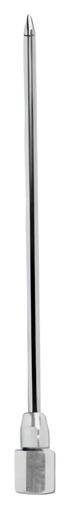

GROZ · Greasing Equipment
Needle Nose Dispensers
CAT NR DNN/6/N · ORD NR 44862
| CAT NR (catalogue number) | DNN/6/N |
|---|---|
| ORD NR (order number) | 44862 |
| Box quantity | 500 |
| Variant (printed column) | 1/8" NPT |
| Needle diameter (inch) | 0.156 |
| Needle diameter (mm) | 3.96 |
| Needle length (inch) | 6 |
| Needle length (mm) | 150 |
| Tip diameter (inch) | 0.051 |
| Tip diameter (mm) | 1.30 |
| Table section | NARROW NEEDLE NOSE DISPENSERS |
Ask for a quote The catalogue PDF, page 63
“Ask for a quote” opens this product in the catalogue: add it to your quote and send it. Buyers from Africa, the Gulf and worldwide are welcome; prices in USD, EUR or INR.
From the GROZ Fluid Handling CC-07 catalogue. Not yet verified: these details were read from the printed catalogue automatically; check the catalogue page before ordering.